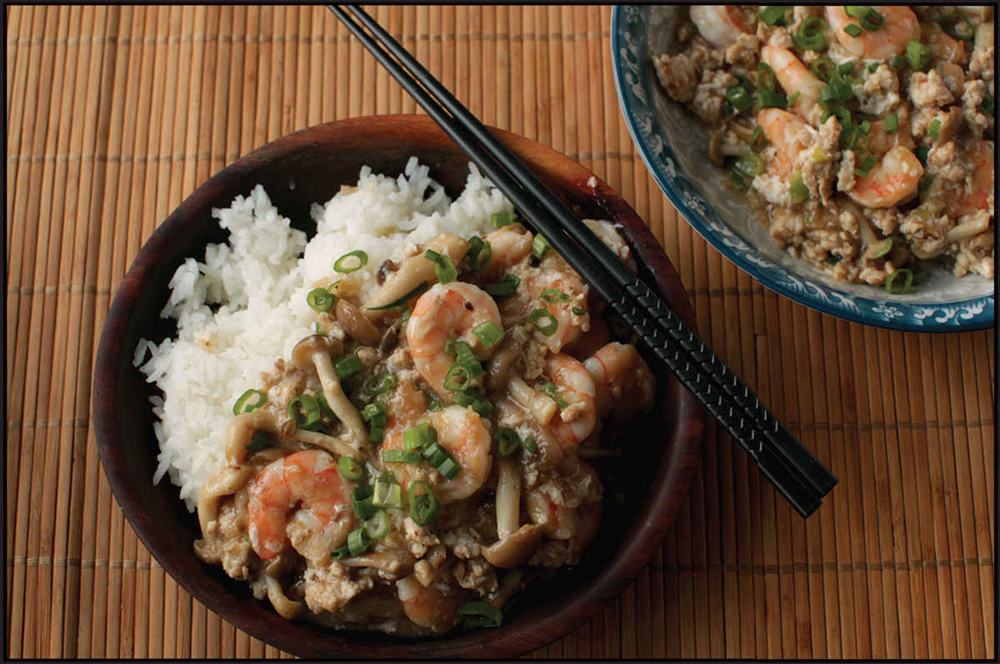

SHRIMP OR TOFU WITH LOBSTER SAUCE
|
Yield Serves 4 |
Active Time 15 minutes Total Time 30 minutes |
You can use tofu in place of shrimp for this dish (instructions follow). For the salt, 12.5 grams is about 1⅓ tablespoons Diamond Crystal kosher salt, 1 tablespoon Morton’s kosher salt, or 2½ teaspoons table salt. You can omit the pork.
This is the first of two dishes in this book in which a sea creature in the name of the dish does not appear in the ingredients (bonus points if you can figure out what the second one is). Shrimp with lobster sauce contains no lobster. Rather, it’s shrimp served in a sauce that was originally paired with lobster by Cantonese immigrants in the northeastern United States, according to a Toronto Life interview with Chinese historians Leo and Arlene Chan. In menus at restaurants like New York’s Shun Lee Palace, that sauce was a translucent mixture of Shaoxing wine and chicken stock, thickened with cornstarch and semi-scrambled egg whites, studded with bits of ground pork, scallions, ginger, and garlic.
As North Americans gained a taste for the sauce and lobster prices rose, the lobster was eventually replaced with cheaper shrimp (and often a handful of peas), and the dish “shrimp with lobster sauce” was born. As it traveled throughout the country, it evolved into a number of regional variations that still exist today. North, in Boston and Toronto, the same basic sauce was transformed into a brown gravy with the addition of dark soy sauce and sometimes fermented black beans. On the West Coast, the pork is often omitted in lieu of vegetables like carrots, corn, and mushrooms.
I prefer my shrimp with lobster sauce without the dark soy and fermented black beans, but I do enjoy including some vegetables in the mix. Stir-frying some beech or shiitake mushrooms with the shrimp is easy, because they both have the same cook time and can be stir-fried together before making the sauce.
Store-bought or homemade chicken stock works just fine for this dish, but since you’re peeling shrimp anyway, we might as well eke out as much flavor as possible from them, and that means using the shells to fortify the stock with some shrimpiness. Another variation of the dish is to omit the shrimp and pork entirely and instead serve the sauce over quickly stir-fried greens (see Snow Pea Shoots with Lobster Sauce, here).
INGREDIENTS
For the Shrimp (see Notes):
2 cups (500 ml) very cold water
12.5 g salt (see Notes)
2 teaspoons (10 g) baking soda
12 ounces (340 g) large shrimp, peeled, shells reserved
A cup or so of ice cubes
For the Sauce:
2 tablespoons (30 ml) Shaoxing wine
1 cup (240 ml) homemade or store-bought low-sodium chicken stock or water
Reserved shrimp shells
½ teaspoon (2 g) sugar
Dash of freshly ground white pepper
Pinch of kosher salt
For the Cornstarch Slurry:
1 tablespoon (3 g) cornstarch
1 tablespoon (15 ml) water
For the Stir-Fry:
2 tablespoons (30 ml) peanut, rice bran, or other neutral oil
6 ounces (175 g) beech mushrooms, ends trimmed and discarded, or shiitake mushrooms, stems discarded and caps sliced
2 teaspoons (5 g) minced garlic (about 2 medium cloves)
2 teaspoons (5 g) minced fresh ginger (about ½-inch segment)
2 scallions, chopped, white and green parts reserved separately
4 ounces (120 g) ground pork
Kosher salt and freshly ground white pepper
½ cup (70 g) frozen peas, thawed (optional)
2 large egg whites, lightly beaten with a pinch of kosher salt
DIRECTIONS
1For the Shrimp: Combine the water, salt, and baking soda in a bowl and stir until the salt and baking soda are dissolved. Add the shrimp and stir to separate them and ensure the brine flows all around. Add the ice cubes and let the shrimp brine for at least 15 minutes and up to 30. Drain thoroughly and pat dry on paper towels or spin in a paper-towel-lined salad spinner.
2For the Sauce: Combine the wine, stock or water, shrimp shells, sugar, white pepper, and salt in a small saucepan or in your wok. Bring to a simmer and cook for 10 minutes. Drain and reserve the shrimp stock (discard the shells). Combine the cornstarch and water in a separate small bowl and stir with a fork until the cornstarch is dissolved.
3BEFORE YOU STIR-FRY, GET YOUR BOWLS READY:

4For the Stir-Fry: Heat a wok over high heat until lightly smoking. Add 1 tablespoon (15 ml) of the oil and swirl to coat. Add the shrimp and mushrooms and stir-fry until the shrimp are pink all over but not quite cooked through (you can cut one open to check—the center should still be translucent) and the mushrooms are tender, about 2 minutes total. Transfer the shrimp and mushrooms to a bowl and set aside.
5Wipe out the wok and return it to high heat until smoking. Add the remaining tablespoon of oil and swirl to coat. Add the garlic, ginger, and scallion whites and stir-fry until fragrant, about 15 seconds. Immediately add the pork and stir-fry, breaking the pork up with a spatula until it is no longer pink, about 1 minute.
6Stir the sauce and add to the wok. Bring to a boil. Stir the cornstarch slurry and add it to the wok. Simmer until the sauce is thick enough to coat the back of a spoon, about 1 minute. Adjust the seasoning with salt and white pepper to taste and stir in the peas (if using).
7Drizzle the egg mixture into the sauce, then gently stir it with a ladle or wok spatula until the eggs form tender ribbons, about 30 seconds. Return the shrimp and mushrooms to the sauce and simmer until the shrimp are cooked through, about 30 seconds. Transfer to a serving platter and sprinkle with scallion greens.
Tofu and Peas with Lobster Sauce
Prepare Shrimp with Lobster Sauce, omitting the ingredients listed under “For the Shrimp,” and using vegetable stock in place of chicken stock. In step 4, stir-fry the mushrooms on their own. Fold one 12-ounce block of silken tofu, diced, and 1 cup thawed frozen peas into the simmering sauce along with the mushrooms in step 6, then finish the dish and serve as directed.